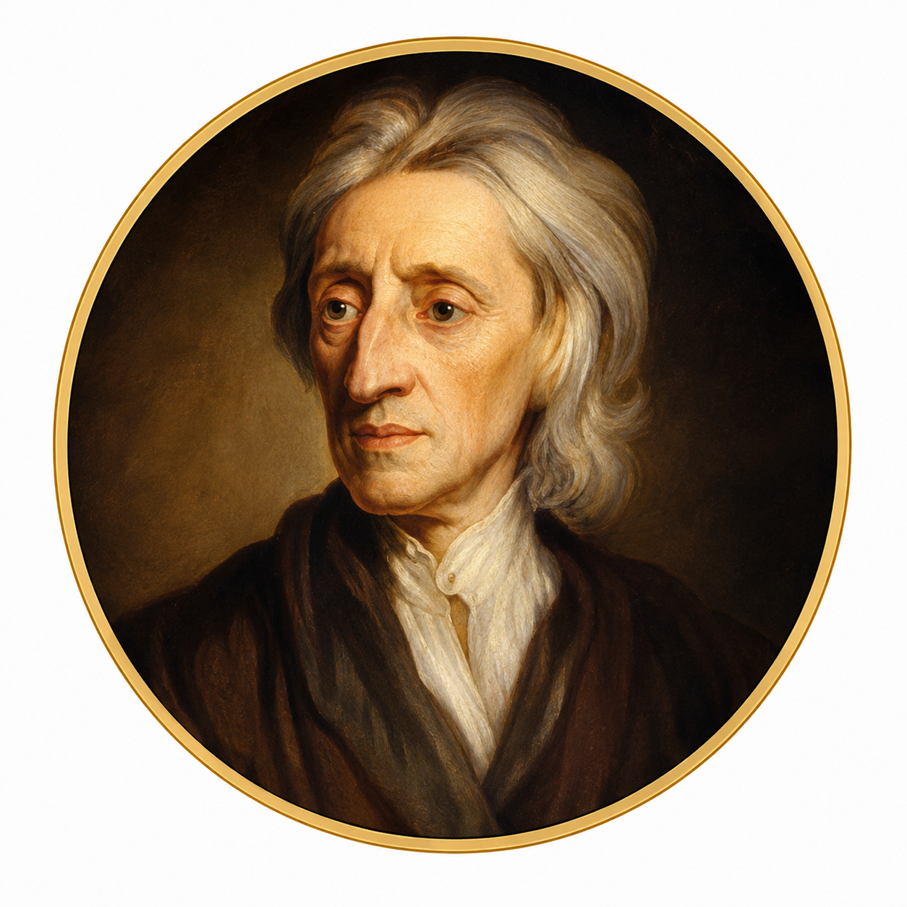

جون لوك
1632 — 1704
الهوية وعي وذاكرة
لكي نهتدي إلى ما يكوّن الهوية الشخصية لابد لنا أن نتبين ما تحتمله كلمة الشخص من معنى.
فالشخص، فيما أعتقد، كائن مفكر عاقل قادر على التعقل والتأمل، وعلى الرجوع إلى ذاته باعتبار أنها مطابقة لنفسها، وأنها هي نفس الشيء الذي يفكر في أزمنة وأمكنة مختلفة. بينة
ووسيلته الوحيدة لبلوغ ذلك هو الوعي الذي يكون لديه عن أفعاله الخاصة. مجيز
وهذا الوعي لا يقبل الانفصال عن الفكر، بل هو، فيما يبدو لي، ضروري وأساسي تماما بالنسبة للفكر، ما دام لا يمكن لأي كائن بشري، كيفما كان، أن يدرك إدراكا فكريا دون أن يشعر أنه يدرك إدراكا فكريا. مجيز
عندما نعرف أننا نسمع أو نشم أو نتذوق أو نحس بشيء ما أو نتأمله أو نريده، فإنما نعرف ذلك في حال حدوثه لنا. بينة
إن هذه المعرفة تصاحب على نحو دائم إحساساتنا وإدراكاتنا الراهنة، وبها يكون كل واحد منا هو نفسه بالنسبة إلى ذاته، وفي هذه الحالة لا نأخذ في الاعتبار ما إذا كانت الذات نفسها تبقى مستمرة في الجوهر نفسه أو في جواهر متنوعة. بينة
إذ لما كان الوعي يقترن بالفكر على نحو دائم، وكان هذا هو ما يجعل كل واحد هو نفسه، ويتميز به، من ثم، عن كل كائن مفكر آخر، فإن ذلك هو وحده ما يكون الهوية الشخصية أو ما يجعل كائنا عاقلا يبقى دائما هو هو. دعوى
وبقدر ما يمتد ذلك الوعي بعيدا ليصل إلى الأفعال والأفكار الماضية، بقدر ما تمتد هوية ذلك الشخص وتتسع. دعوى
فالذات الحالية هي نفس الذات التي كانت حينئذ، وذلك الفعل الماضي إنما صدر عن الذات نفسها التي تدركه في الحاضر. بينة
المصدر: جون لوك، مقالة في الفهم البشري، الكتاب II فصل 27، فقرة 9. ترجمة إميليان نايرت، فران، 1994، ص: 264-265.